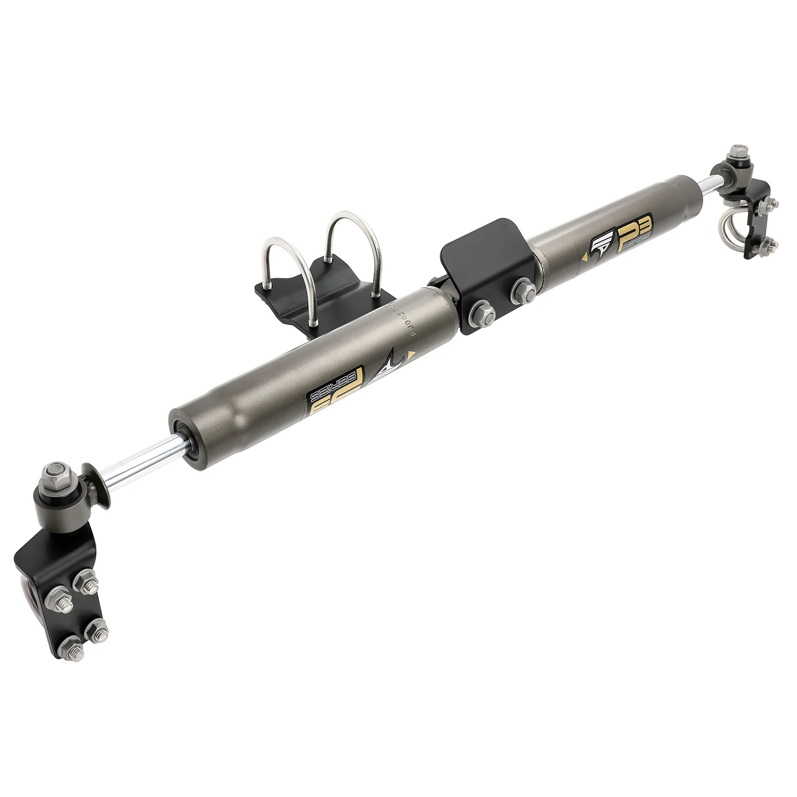

1 / 6Dual Steering Stabilizer Do Jeep Wrangler JL 2018-2022 Do Gladiator JT 2020-2022 2.0 Tube
Dane techniczne: Rozszerzona długość: 20,31 cala Długość zwinięta: 13,03 cala Zawartość zestawu: 2 x stabilizator układu kierowniczego 3 x wsporniki montażowe 6 x zaciski typu U-Bolt Gwarancja: 1 rok gwarancji producenta
Technical Data: Extended Length: 20.31 inch Collapsed Length: 13.03 inch Package Includes: 2 x Steering Stabilizer 3 x Mounting Brackets 6 x U-Bolt Clamps Warranty: 1 year manufacturer's warranty
999,99 PLN
Opis produktu
Dane techniczne:
- Rozszerzona długość: 20,31 cala
- Długość zwinięta: 13,03 cala
Zawartość zestawu:
- 2 x stabilizator układu kierowniczego
- 3 x wsporniki montażowe
- 6 x zaciski typu U-Bolt
Gwarancja:
1 rok gwarancji producenta
Technical Data:
- Extended Length: 20.31 inch
- Collapsed Length: 13.03 inch
Package Includes:
- 2 x Steering Stabilizer
- 3 x Mounting Brackets
- 6 x U-Bolt Clamps
Warranty:
1 year manufacturer's warranty
FAPO Polska
Ten produkt obsługujemy lokalnie
Autoryzowana obsługa
FAPO Polska prowadzi katalog, kontakt i zamówienia bez odsyłania klienta do zewnętrznych sklepów.
Dobór po aucie
Sprawdzamy dopasowanie produktu do pojazdu, rocznika i wersji przed finalizacją zamówienia.
Wsparcie po zakupie
Masz kontakt w Polsce w sprawach zamówień, wysyłki, gwarancji i zwrotów.